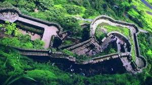
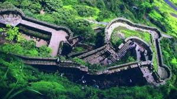
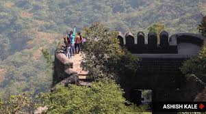
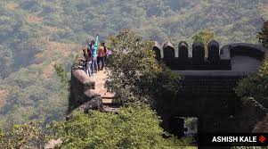

SINHGAD FORT
Sinhagad Fort, also known as Kondhana Fort, is an ancient hill fortress located approximately 30 kilometers southwest of Pune, India. It stands atop a 1,320-meter (4,330-foot) hill and offers breathtaking views of the surrounding Sahyadri Mountains. The fort has a rich history dating back to the 2nd century BCE and has witnessed numerous battles and power struggles. It is particularly renowned for the Battle of Sinhagad in 1670, where Tanaji Malusare, a brave Maratha warrior, valiantly captured the fort from the Mughal forces.
 

 
 Historical Significance:
Sinhagad Fort played a pivotal role in the Maratha Empire’s expansion and consolidation under the leadership of Chhatrapati Shivaji Maharaj. The fort’s strategic location and sturdy fortifications made it a key stronghold for the Marathas, enabling them to defend their territory and launch attacks against their enemies.
Early history:
According to the Deccan sultanates era muslim historian Ferishta, Sinhagad fort was captured from Koli chieftain Nag Nayak in 1340 by the sultan of Delhi, Muhammad bin Tughluq.[5] The Sinhagad Fort was initially known as "Kondhana" after the sage Kaundinya. The fort was captured by forces of Muhammad bin Tughluq in 1328 from Koli chieftain Nag Naik after a siege of eight months.[6][7] It then became part of the Bahmani sultanate followed by the Nizam Shahi of Ahmadnagar in 1485. After the fall of Nizam shahi it came under the control of the Adilshahi in early late 1500s
Battle of Sinhagad:
Main article: Battle of Sinhagad
In 1670, Shivaji reconquered the fort for the third time through his Koli Subedar,[9] Tanaji Malusare in Battle of Sinhagad, and the fort came and stayed under the Maratha rule till 1689 A.D.
A watercolor painting of Pune dating back to the late Peshwa era by British artist, Henry Salt. The picture clearly depicts the towering Sinhagad Fort in the background
View from Sinhagad
A steep cliff leading to the fort was scaled in the dead of the night with the help of a tamed monitor lizard named "Yashwanti", colloquially known as a Ghorpad.[11][12] Thereafter, A fierce battle ensued between Tanaji and his men versus the Mughal army headed by Udaybhan Singh Rathod, a Rajput Sardar who had control of the fort. Tanaji Malusare lost his life, but his brother Suryaji took over and captured the Kondana fort, now known as Sinhagad.[13]
There is an anecdote that upon hearing of Tanaji's death, Shivaji expressed his remorse with the words, "Gad ala, pan Sinha gela" - "The Fort is conquered, but the Lion was lost".According to some, the name Sinhagad predates this event. A bust of Tanaji Malusare was established on the fort in memory of his contribution to the battle.[14]
After the death of Sambhaji, the Mughals regained control of the fort. The Marathas headed by "Sardar Balkawade", recaptured it in 1693. Rajaram I took asylum in this fort during a Mogul raid on Satara. He died at the Fort on 3 March 1700 A.D. In 1703, Aurangzeb conquered the fort. In 1706, it once again went into the hands of the Maratha's. Panaji Shivdev of Sangola, Visaji Chafer, and Shankar Narayan,the Pant Sachiv played a key role in this battle.